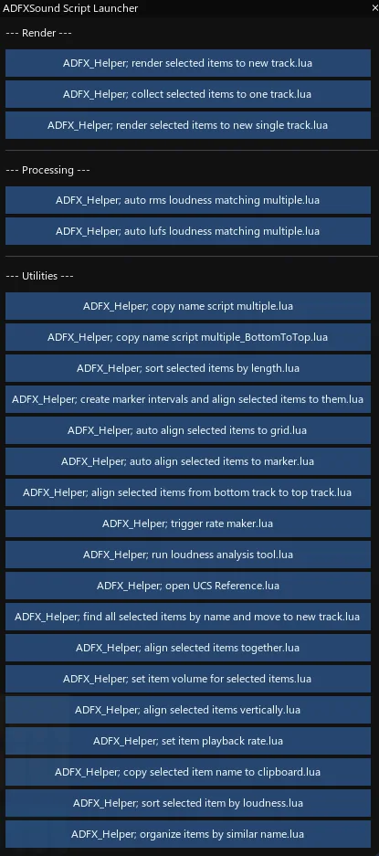

Github Repository of random assortment of Reaper Scripts
https://raw.githubusercontent.com/ADearing01/ADFXSound/master/index.xml
ADFX_Helper; renamer tool.lua
A simple, no frills item renamer; sequential or not. Do the thing.
-
Execute Script = Enter
-
Toggle Sequential Numbering = Tab
-
Exit = Esc

ADFX_Helper; script launcher.lua
Configurable floating GUI with arrangeable, easily executable buttons; for ones growing list of scripts
ADFX_Helper; trigger rate maker.lua
Create a 6 second loop at desired trigger rate, randomizing selected items, on a new track
ADFX_Helper; cubase style split tool.lua
ADFX_Helper; cubase style split tool reset.lua
This replicates the Steinberg (Cubase/Nuendo) style splitter tool, traditionally using 3 to activate a persistent splitter mouse tool, and then 1 to return to the normal mouse pointer. In this case ADFX_Helper; cubase style split tool reset.lua would be assigned to action 1, and ADFX_Helper; cubase style split tool.lua to 3 to mimic the same key strokes and functionality.
v1.1 adds cooldown to prevent phantom clicks
ADFX_Helper; create marker intervals and align selected items to them.lua
NOTE: The cubase style split tools scripts require Ultraschall API, available via Reapack. https://ultraschall.fm/api/
ADFX_Helper; insert 2 pop sync tone.lua
This replicates Pro Tools functionality to quickly add a 2 pop sync tone. Option+Shift+Control+3 (Mac), Win+Alt+Shift+3 (PC)
Download link for Media file for 2 Pop Sync Tone script: ( ADFX_Helper; insert 2 pop sync tone.lua )
Automatically aligns selected items with equal spacing and creates markers at each item position
ADFX_Helper; create markers at grid intervals.lua
Create markers on the downbeat of 1 at grid intervals
ADFX_Helper; auto align selected items to marker.lua
Automatically aligns selected items to markers while preventing overlap
ADFX_Helper; copy render directory to clipboard.lua
ADFX_Helper; make variations from markered takes.lua
ADFX_Helper; set repeat on.lua
ADFX_Helper; set repeat off.lua
ADFX_Helper; take name from clipboard paste.lua
ADFX_Helper; take name to clipboard copy.lua
ADFX_Item; reset selected items volume to default.lua
ADFX_Item; select all items on track.lua
ADFX_Item; togglemute.lua
ADFX_Helper; auto align selected items to grid.lua
ADFX_Helper; auto align selected items to marker.lua
ADFX_Helper; export markers to csv.lua
ADFX_Helper; trigger rate maker.lua
ADFX_Helper; insert 2 pop sync tone.lua
ADFX_Helper; align selected items together.lua
ADFX_Helper; create makers at grid intervals.lua
ADFX_Helper; create marker intervals and align selected items to them.lua